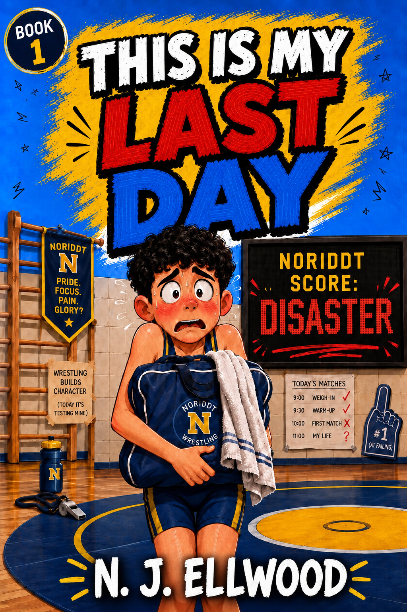

ONE NOTE. ONE DAY. ONE LAST CHANCE.
This Is My Last Day
According to the note in Jake Morrow's pocket, he is going to die before midnight. Jake has only one day to confront everything he has avoided, including the girl he has never been brave enough to speak to.
Beginning
Jake's story starts here
Key setting
St Edmund's School
At its heart
Courage and family